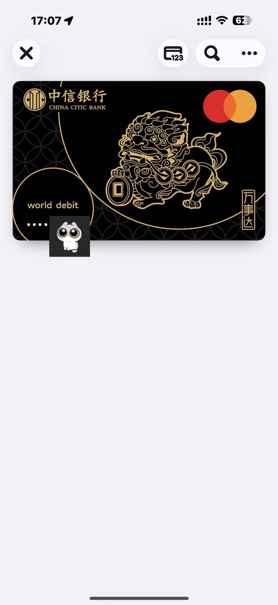

雪秋小可爱
@XUEQIUxka
@KevinYang0803 可以去开招商的金葵花万事达那个不怎么拒付，中信出了名的拒付

雪秋小可爱
@XUEQIUxka
这里边有些是拒付王
我就不点名是哪家了 https://t.co/uqDc2ceknc
KevinYang
@KevinYang0803
😋😋😋喜提黑貔貅
ApplePay好👍
感谢沈阳，感谢Beyoncé https://t.co/LYutA3mWoY